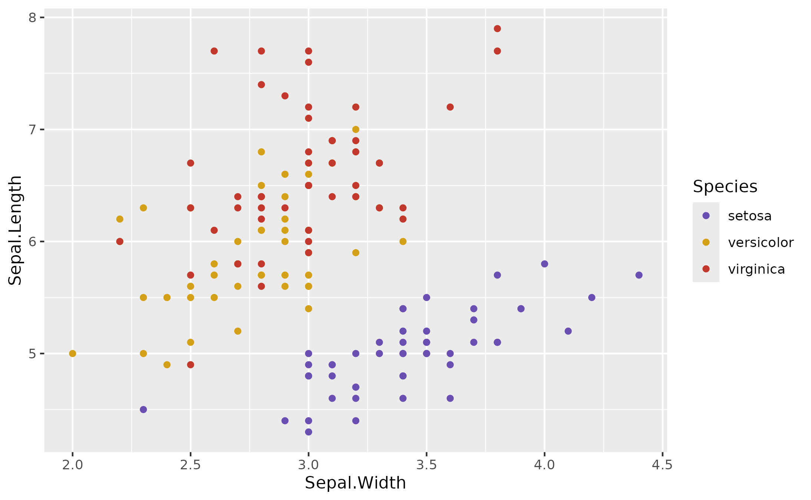
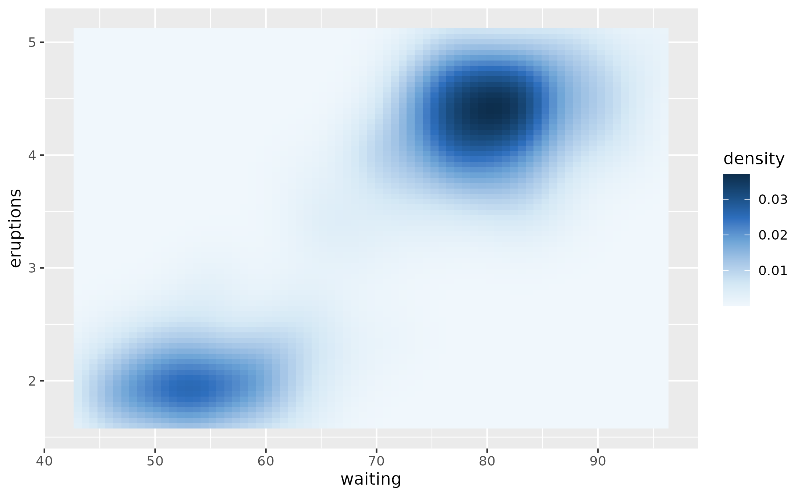
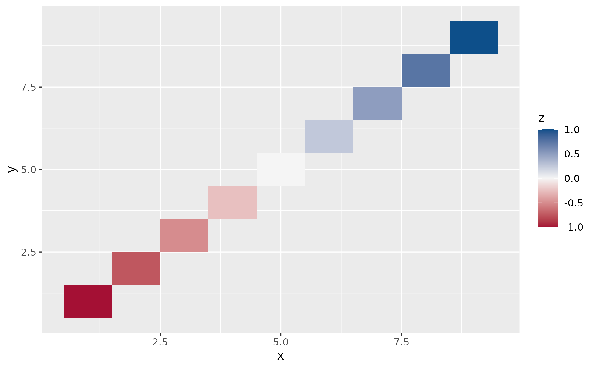

Apply Cambridge, MA inspired color palettes to ggplot2 plots. Supports discrete categorical scales, continuous gradients, and diverging scales centered on zero.
Usage
scale_color_cam(
palette = "spring",
discrete = TRUE,
reverse = FALSE,
na.value = "#5A5A5A",
...
)
scale_colour_cam(
palette = "spring",
discrete = TRUE,
reverse = FALSE,
na.value = "#5A5A5A",
...
)Arguments
- palette
Palette name. Categorical: "spring", "summer", "autumn", "winter", "river". Sequential: "crimson_seq", "river_seq", "foliage_seq". Diverging: "crimson_blue", "brick_pine".
- discrete
Logical, TRUE for discrete scale, FALSE for continuous. Ignored for diverging palettes which are always continuous.
- reverse
Logical, reverse color order if TRUE
- na.value
Color used for missing values. Default is granite gray (#5A5A5A).
- ...
Additional arguments passed to ggplot2 scale functions
Examples
library(ggplot2)
# Categorical palette for discrete data
ggplot(iris, aes(Sepal.Width, Sepal.Length, color = Species)) +
geom_point() +
scale_color_cam("autumn")

# Sequential palette for continuous data
ggplot(faithfuld, aes(waiting, eruptions, fill = density)) +
geom_tile() +
scale_fill_cam("river_seq", discrete = FALSE)

# Diverging palette for centered data (correlations, differences)
# Automatically centers on zero
df <- data.frame(x = 1:9, y = 1:9, z = seq(-1, 1, length.out = 9))
ggplot(df, aes(x, y, fill = z)) +
geom_tile() +
scale_fill_cam("crimson_blue")
